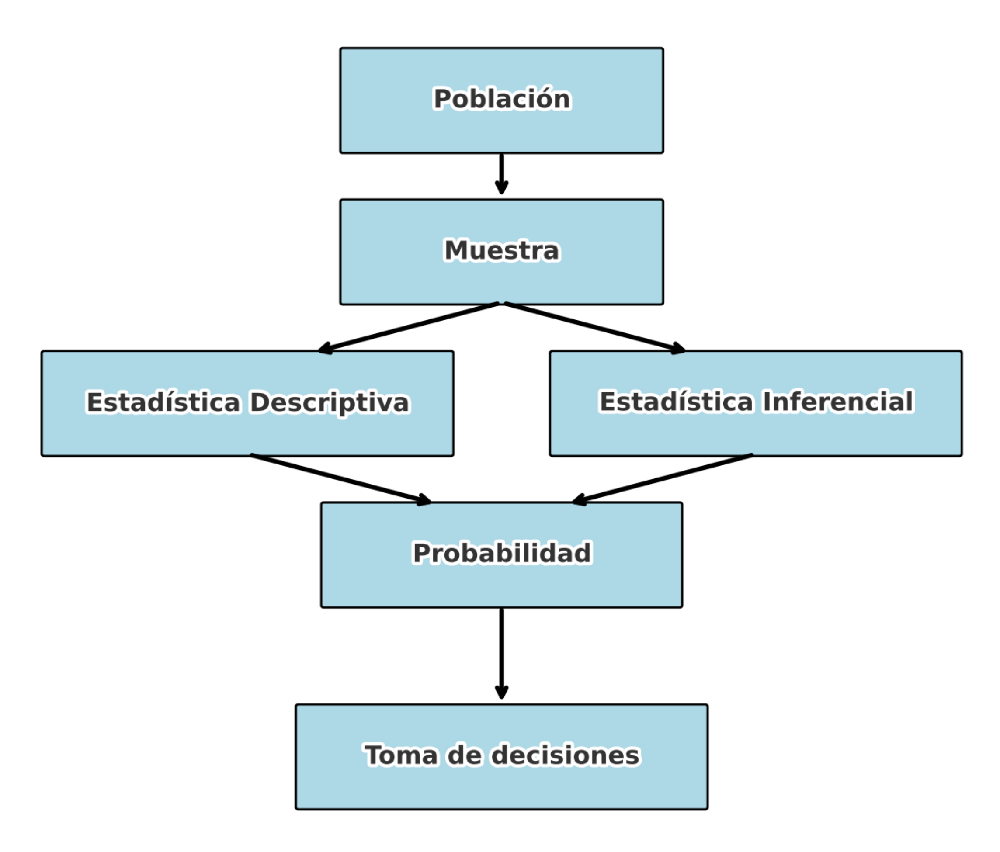

La bioestadística es una rama de la estadística esencial para entender la vida a través de los datos. Se aplica a información proveniente de organismos vivos, desde células individuales hasta poblaciones humanas enteras, y permite traducir esos datos en conocimiento útil para la salud pública, la medicina, la biología y otras ciencias de la vida.
Su propósito es interpretar, analizar y contextualizar datos complejos para tomar decisiones informadas. Esto va desde evaluar si un tratamiento médico es efectivo, hasta identificar factores de riesgo en enfermedades crónicas, modelar la propagación de epidemias o entender cómo influyen los determinantes sociales en la salud.
Ejemplos:
En una pandemia, la bioestadística permite estimar la velocidad de transmisión de un virus y proyectar su impacto.
En un hospital, ayuda a decidir si un nuevo medicamento mejora significativamente la supervivencia de pacientes con cáncer.
En biología molecular, permite identificar genes cuya expresión cambia en respuesta a una enfermedad.
La bioestadística nos invita a pensar críticamente y a ver más allá de los números: a encontrar patrones, formular hipótesis y validar teorías con base en evidencia. En última instancia, es una disciplina que busca mejorar vidas a través de decisiones basadas en datos confiables.
Motivación para estudiar estadística

Leyenda de la figura
Esta figura ilustra el flujo general del proceso estadístico. Todo comienza con una población, de la cual se extrae una muestra para su análisis. A partir de esa muestra, se aplican dos ramas fundamentales: la estadística descriptiva, que resume y presenta los datos, y la estadística inferencial, que permite hacer generalizaciones sobre la población. Ambas ramas se apoyan en la probabilidad como base teórica para manejar la incertidumbre. Finalmente, el análisis estadístico orienta la toma de decisiones, permitiendo aplicar el conocimiento generado a problemas reales.
La estadística es esencial en la investigación científica porque actúa como el lenguaje con el que interpretamos la variabilidad inherente al mundo natural y social. Nos permite responder preguntas complejas con evidencia numérica, y transforma la incertidumbre en conocimiento útil y accionable.
Gracias a la estadística, podemos:
Extraer conclusiones significativas a partir de datos, por ejemplo, determinar si un tratamiento realmente mejora la salud de los pacientes o si una intervención de salud pública reduce la incidencia de una enfermedad.
Medir la incertidumbre, lo cual es fundamental cuando se trabaja con muestras en lugar de poblaciones completas. Esto permite comunicar el grado de confianza en los resultados obtenidos, algo crucial al tomar decisiones clínicas o políticas.
Tomar decisiones fundamentadas basadas en análisis objetivos. Desde la asignación de recursos hospitalarios hasta la aprobación de nuevas vacunas, la estadística provee la base para justificar esas decisiones.
En esencia, la estadística no solo ayuda a responder “¿qué está ocurriendo?”, sino también “¿por qué?”, “¿cuánto?” y “¿con qué grado de certeza?”. Es una brújula intelectual que guía la ciencia hacia conclusiones robustas y reproducibles.
Fuentes de datos en bioestadística
La calidad del análisis estadístico depende directamente de la calidad de los datos. En bioestadística, los datos provienen de múltiples fuentes, cada una con sus características, ventajas y desafíos. Comprender estas fuentes permite seleccionar el diseño de estudio adecuado, prever limitaciones y garantizar la validez de los resultados.
Principales fuentes de datos en ciencias de la salud
Fuente de datos
Descripción
Ejemplos reales
Registros clínicos
Información recogida de forma rutinaria en hospitales, centros de salud.
Historias médicas, resultados de laboratorio, diagnósticos, tratamientos, medicamentos.
Encuestas poblacionales
Instrumentos estructurados aplicados a una muestra representativa.
Encuesta Nacional de Salud, Behavioral Risk Factor Surveillance System (BRFSS).
Ensayos clínicos
Estudios controlados para evaluar la eficacia y seguridad de tratamientos.
Comparación de un nuevo medicamento frente a un placebo en pacientes con diabetes.
Estudios observacionales
Recolección de datos sin intervenir en los factores de exposición.
Seguimiento de hábitos alimenticios y desarrollo de enfermedades cardiovasculares.
Bases de datos genómicas y moleculares
Conjuntos masivos de datos de expresión génica, variantes genéticas, etc.
RNA-seq, microarreglos, The Cancer Genome Atlas (TCGA), ENCODE.
Sistemas de vigilancia epidemiológica
Recolección sistemática para detectar y responder a eventos de salud pública.
Casos de dengue, brotes de influenza, vigilancia del COVID-19.
Experimentos en laboratorio o modelos animales
Datos obtenidos en condiciones controladas.
Ensayos con ratones modificados genéticamente, cultivos celulares.
¿Por qué es importante conocer la fuente de los datos?
Define el tipo de análisis posible. Por ejemplo, los ensayos clínicos permiten establecer relaciones causales; las encuestas, asociaciones poblacionales.
Afecta la calidad del dato. Algunas fuentes pueden tener sesgos (por ejemplo, autoinforme en encuestas) o datos faltantes.
Permite evaluar la representatividad. ¿La muestra refleja adecuadamente la población de interés?
Ejemplos
Estudiante de medicina: ¿Qué tan efectiva es una nueva vacuna contra el virus respiratorio sincitial (VRS)? → Se analiza un ensayo clínico.
Estudiante de salud pública: ¿Cuántos adultos hacen actividad física en Puerto Rico? → Se consultan datos de BRFSS del CDC.
Estudiante de biología molecular: ¿Qué genes se activan cuando una célula es infectada por un virus? → Se usan datos de RNA-seq o Microarreglos.
Estudiante de epidemiología: ¿Cuántos casos de dengue hubo este año y en qué municipios? → Se consulta el sistema de vigilancia del Departamento de Salud.
🌐 Explora bases de datos abiertas
Puedes comenzar a explorar bases reales con los siguientes enlaces:
Una variable es una característica que puede tomar diferentes valores entre individuos, objetos o situaciones. Ejemplos: estatura, peso, edad.
Tipos de variables
Tipo
Subtipo
Ejemplos
Cualitativas
Nominales
Sexo, diagnóstico médico, etnicidad
Ordinales
Nivel educativo, escala de dolor
Cuantitativas
Discretas
Número de hijos, admisiones hospitalarias
Continuas
Edad, IMC, presión arterial
Ejercicio
Clasifique las siguientes variables como nominal, ordinal, discreta o continua:
Estado civil:
Nivel educativo:
Medallas de los Juegos Panamericanos:
Calificaciones en un curso (A, B, C, D, F):
Puntos anotados en un juego de baloncesto:
Número de habitantes de un municipio:
Ingreso anual de una familia en Puerto Rico:
Variables aleatorias
Una variable aleatoria es aquella cuyo valor depende del azar. En salud, por ejemplo, la estatura, el peso o la edad son variables aleatorias, ya que varían entre personas.
Ejemplo:
Si lanzamos una moneda:
Variable aleatoria ( X ):
Resultado: cara (1) o cruz (0)
Ejemplos en salud
Número de hijos por madre
Nivel de glucosa en sangre
Respuesta al tratamiento
Escalas de medición
Las escalas de medición determinan cómo se interpretan los valores observados:
Escala
Características
Ejemplos
Nominal
No orden
Sexo, tipo de sangre
Ordinal
Orden, sin distancias fijas
Grado de dolor
Intervalo
Orden y distancia, sin cero absoluto
Temperatura en °C
Razón
Orden, distancia y cero absoluto
Peso, edad, ingresos
Población y muestra
Población: Conjunto total de elementos que se desea estudiar (personas, células, plantas, etc.). Puede ser finita o infinita.
Muestra: Subconjunto de la población seleccionado para su análisis.
Ejemplo:
Población: Todos los estudiantes de una universidad
Una muestra de tamaño ( n ) se selecciona de una población de tamaño ( N ), de forma que cada elemento tiene la misma probabilidad de ser elegido.
Ventajas
Todos los individuos tienen igual oportunidad.
Resultados más generalizables si el tamaño es adecuado.
Desventajas
Se necesita una lista completa de la población.
Muestras pequeñas pueden no ser representativas.
En R
poblacion <-1:100set.seed(123)# Sin reemplazomuestra1 <-sample(poblacion, size =10, replace =FALSE)muestra1
[1] 31 79 51 14 67 42 50 43 97 25
# Con reemplazomuestra2 <-sample(poblacion, size =10, replace =TRUE)muestra2
[1] 90 91 69 91 57 92 9 93 99 72
Conclusión
Comprender el tipo de datos, las variables involucradas y cómo se seleccionan las muestras es fundamental para aplicar correctamente los métodos estadísticos en salud. Estos conceptos son la base para avanzar hacia la estadística descriptiva e inferencial.